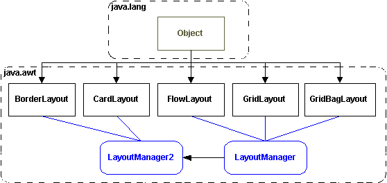

java.awt.LayoutManager |
Layout |
Every
AWT Container has one LayoutManager,
which is responsible for arranging the components within the container.
Java defines the general properties and behaviors
common to all layout managers in the java.awt.LayoutManager
and LayoutManager2 interfaces, with
methods for adding and removing components and laying out the contents
of a container.  All LayoutManagers, should define the following methods : void addLayoutComponent(String
name, Component comp); Note: Although Layout Managers, define these methods, they do not necessarily have to act upon all these methods. For instance, the FlowLayout does not need to 'do' anything in the addLayoutComponent() or removeLayoutComponent() methods, because it simply lays out whatever components it finds in the container that calls it (a container maintains an array of components), in the order they were added to that container. Other more sophisticated layout managers, such as BorderLayout, do maintain their own list of components with associated positioning information. When adding a component to a container with a BorderLayout you can specify a String in the add( ) method that describes the desired position of that component. |
|